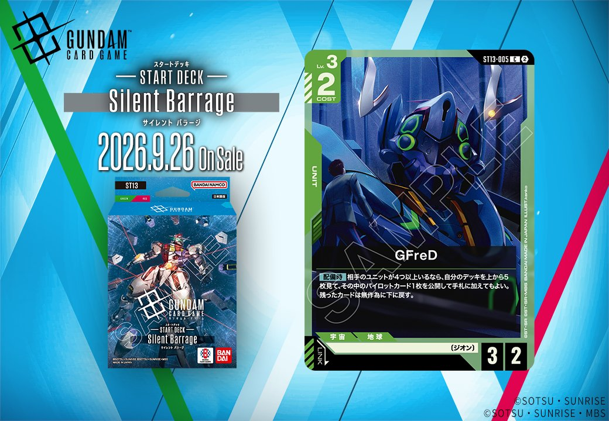

今回は「Generation Pulse」ではなく、拡張セット【ST13】に収録される緑のUNIT「GFreD」(ST13-005)を取り上げます。発売日は2026-09-26で、1枚のカードとして登場します。

GFreD (ST13-005)
| 色 | 緑 | タイプ | UNIT |
| Lv | 3 | コスト | 2 |
| AP | 3 | HP | 2 |
| 特徴 | 〔ジオン〕 | ||
効果: 【配備時】相手のユニットが4つ以上いるなら、自分のデッキを上から5枚見て、その中のパイロットカード1枚を公開して手札に加えてもよい。残ったカードは無作為に下に戻す。
GFreD（ST13-005）はCOST2でAP3/HP2と攻撃寄りのステータスを持つ〔ジオン〕ユニットで、2026-09-26発売のST13収録。【配備時】に相手のユニットが4つ以上いる場合、デッキ上5枚からパイロットカード1枚を手札に加えられる。相手が展開した中盤以降に配備することで発動条件を満たしやすく、シャア・アズナブル（ST03-011）のようなパイロットを引き込む手段になる点が評価できる。
関連カード
-
 ザクⅡ(ST03-008)緑系デッキ内採用率12% (560デッキ)
ザクⅡ(ST03-008)緑系デッキ内採用率12% (560デッキ) -
 リック・ドム(GD01-030)緑系デッキ内採用率11.4% (532デッキ)
リック・ドム(GD01-030)緑系デッキ内採用率11.4% (532デッキ) -
 ザクⅡ（シャア・アズナブル機）(ST03-006)緑系デッキ内採用率10.9% (508デッキ)
ザクⅡ（シャア・アズナブル機）(ST03-006)緑系デッキ内採用率10.9% (508デッキ) -
 ザクⅡ(GD01-035)緑系デッキ内採用率10.8% (504デッキ)
ザクⅡ(GD01-035)緑系デッキ内採用率10.8% (504デッキ) -
 シャア・アズナブル(ST03-011)緑系デッキ内採用率9% (419デッキ)
シャア・アズナブル(ST03-011)緑系デッキ内採用率9% (419デッキ)